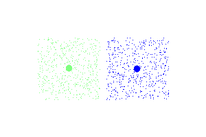
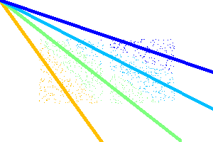

Text clustering May 10th, 2013
In this article I will introduce one thing that has been missing from NlpTools, clustering. The base similarity concepts have long been included in NlpTools and it was a matter of time to implement some clustering methods.
Current status
So far only KMeans has been implemented and I have not yet published it. KMeans is, probably, the simplest clustering algorithm and one of the fastest. It allows for clustering with many distance metrics (euclidean, cosine similarity, hamming, etc). Combined with simhash it can be used to cluster big corpuses even in php.
Examples
Simple euclidean clustering at two dimensions.

The only thing that needs to change, in order to cluster using cosine similarity at two dimensions, is the parameters at the initialization of the KMeans class.

Future
NlpTools will also contain the following clustering methods
- Hierarchical clustering
- Expectation Maximization clustering (probably with Naive Bayes model)
Moreover I plan to add some tools for internal evaluation of clusters (silhouette, SSE, Correlation).
Backwards incompatible changes
When the clustering branch is merged with the master branch the following backwards incompatible changes will take place.
- SetDistance and SetSimilarity, the similarity and distance interfaces accordingly are renamed to Distance and Similarity
- The above interfaces no longer require arrays as parameters, thus we could even define the distance between two strings without the need to split those strings in character sets